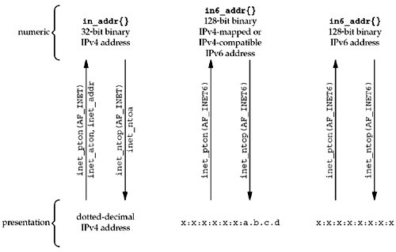

| [ Team LiB ] |
|
3.7 inet_pton and inet_ntop FunctionsThese two functions are new with IPv6 and work with both IPv4 and IPv6 addresses. We use these two functions throughout the text. The letters "p" and "n" stand for presentation and numeric. The presentation format for an address is often an ASCII string and the numeric format is the binary value that goes into a socket address structure.
The family argument for both functions is either AF_INET or AF_INET6. If family is not supported, both functions return an error with errno set to EAFNOSUPPORT. The first function tries to convert the string pointed to by strptr, storing the binary result through the pointer addrptr. If successful, the return value is 1. If the input string is not a valid presentation format for the specified family, 0 is returned. inet_ntop does the reverse conversion, from numeric (addrptr) to presentation (strptr). The len argument is the size of the destination, to prevent the function from overflowing the caller's buffer. To help specify this size, the following two definitions are defined by including the <netinet/in.h> header: #define INET_ADDRSTRLEN 16 /* for IPv4 dotted-decimal */ #define INET6_ADDRSTRLEN 46 /* for IPv6 hex string */ If len is too small to hold the resulting presentation format, including the terminating null, a null pointer is returned and errno is set to ENOSPC. The strptr argument to inet_ntop cannot be a null pointer. The caller must allocate memory for the destination and specify its size. On success, this pointer is the return value of the function. Figure 3.11 summarizes the five functions that we have described in this section and the previous section. Figure 3.11. Summary of address conversion functions. ExampleEven if your system does not yet include support for IPv6, you can start using these newer functions by replacing calls of the form foo.sin_addr.s_addr = inet_addr(cp); with inet_pton(AF_INET, cp, &foo.sin_addr); and replacing calls of the form ptr = inet_ntoa(foo.sin_addr); with char str[INET_ADDRSTRLEN]; ptr = inet_ntop(AF_INET, &foo.sin_addr, str, sizeof(str)); Figure 3.12 shows a simple definition of inet_pton that supports only IPv4. Similarly, Figure 3.13 shows a simple version of inet_ntop that supports only IPv4. Figure 3.12 Simple version of inet_pton that supports only IPv4.libfree/inet_pton_ipv4.c
10 int
11 inet_pton(int family, const char *strptr, void *addrptr)
12 {
13 if (family == AF_INET) {
14 struct in_addr in_val;
15 if (inet_aton(strptr, &in_val)) {
16 memcpy(addrptr, &in_val, sizeof(struct in_addr));
17 return (1);
18 }
19 return (0);
20 }
21 errno = EAFNOSUPPORT;
22 return (-1);
23 }
Figure 3.13 Simple version of inet_ntop that supports only IPv4.libfree/inet_ntop_ipv4.c
8 const char *
9 inet_ntop(int family, const void *addrptr, char *strptr, size_t len)
10 {
11 const u_char *p = (const u_char *) addrptr;
12 if (family == AF_INET) {
13 char temp[INET_ADDRSTRLEN];
14 snprintf(temp, sizeof(temp), "%d.%d.%d.%d", p[0], p[1], p[2], p[3]);
15 if (strlen(temp) >= len) {
16 errno = ENOSPC;
17 return (NULL);
18 }
19 strcpy(strptr, temp);
20 return (strptr);
21 }
22 errno = EAFNOSUPPORT;
23 return (NULL);
24 }
|
| [ Team LiB ] |
|